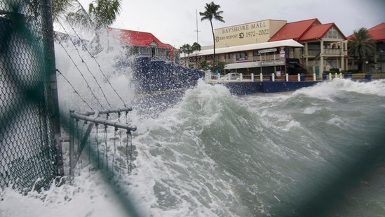

Hurricane Ian: Hurricane Ian made landfall early Tuesday in Cuba’s Pinar del Rio province.
 1, 2, 3, 4 new windowHurricane Ian: Waves crash against a seawall as Hurricane Ian passes.(AP)
Strengthening Hurricane Ian lashed Cuba where 50,000 people have been evacuated 50,000 people, as the hurricane became a major Category 3 storm on Tuesday. Hurricane Ian could hit Florida as a Category 4 hurricane.
“Cuba is expecting extreme hurricane-force winds, also life-threatening storm surge and heavy rainfall,” hurricane center senior specialist Daniel Brown told The Associated Press.